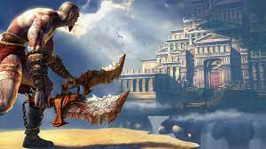
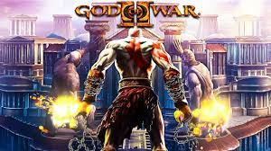
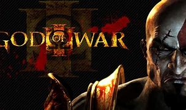
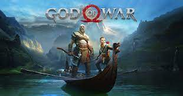
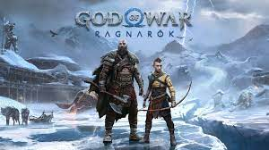

GoW1
O primeiro God of War foi a base de tudo. Ele trazia uma história bem simples: servo de Ares, o Deus da Guerra, Kratos batalhava na Grécia antiga contra diversas forças militares e lidava com qualquer tipo de inimigo. Mas ele tinha uma fraqueza: sua família.GoW2
God of War 2 começa com Kratos no panteão grego. Após derrotar Ares, ele assume sua posição como o novo Deus da Guerra no Olimpo. Após uma grande batalha, Kratos recebe auxílio de Zeus, que pede, em troca, sua lealdade ao Olimpo. Ele se nega, por ainda ser atormentado com pesadelos de sua família morta.
GoW3
A gente começa exatamente onde o capítulo anterior parou. Kratos sobe o Monte Olimpo pegando carona nas costas de Gaia, que está acompanhada pelos outros titãs. E lá de cima, Zeus começa a mandar os deuses defenderem sua “base”. veja este video para entender melhor.
God of War(2018)
Ao contrário dos jogos anteriores, que eram vagamente baseados na mitologia grega, este título é vagamente baseado na mitologia nórdica, com a maior parte do tempo situado na antiga Noruega no reino de Midgard. Pela primeira vez na série, há dois protagonistas principais: Kratos, o antigo deus da guerra grego que é acompanhado por seu jovem filho Atreus. Após a morte da segunda esposa de Kratos e mãe de Atreus, eles viajam para cumprir sua promessa de espalhar suas cinzas no pico mais alto dos nove reinos. Kratos mantém seu passado conturbado em segredo de Atreus, que não tem consciência de sua natureza divina. Ao longo da jornada, eles encontram monstros e deuses do mundo nórdico.
God of War:Ragnarok
A trama de God of War: Ragnarök se passa três anos após os eventos do jogo anterior. Os eventos que antecederam o Ragnarök, conhecido como Fimbulwinter, estão chegando ao fim e está profetizado que o fim do mundo começará a trazer grandes convulsões e muita destruição.